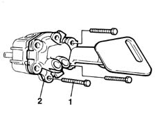
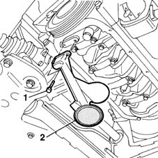

1084B28 engine oil intake pump - r + r with crankcase sump removed
- Path
- Procedures > 10 ENGINE UNIT > 1084 ENGINE LUBRICATION SYSTEM > 1084B engine oil lubrication circuit > 1084B28 engine oil intake pump - r + r with crankcase sump removed
- Kind
- repair procedure (removal / refitting; the operation number is the code)
- Applies to
- all engines; all production periods
- Interactive page
- https://sloeber94.github.io/elrnDB-fMltpl/en/#/2891321
Applies to: engines: 1.6 16v; all production periods
 Removing
Removing
 Refitting
Refitting1020A20 crank case oil sump - r + r clean seals for sealant application
1084B10 engine oil pump - r + r with crankcase sump removed
1. Undo the bolts securing the intake duct to the engine oil pump.
2. Remove the engine intake duct.

Applies to: engines: 1.6 16v; all production periods
Refitting
RemovingFit the engine oil intake duct.
Tighten the bolts securing the intake duct to the oil pump.
1084B10 engine oil pump - r + r with crankcase sump removed
1020A20 crank case oil sump - r + r clean seals for sealant application
Applies to: engines: 1.9 JTD 8V; all production periods
Removing
Refitting1. Undo the bolts securing the oil intake duct.
2. Remove the oil intake.

Applies to: engines: 1.9 JTD 8V; all production periods
Refitting
RemovingFit the engine oil intake duct into its seat on the sump.
Tighten the bolts.